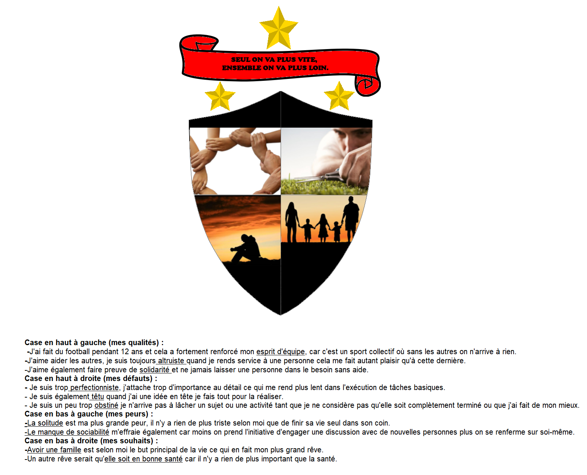
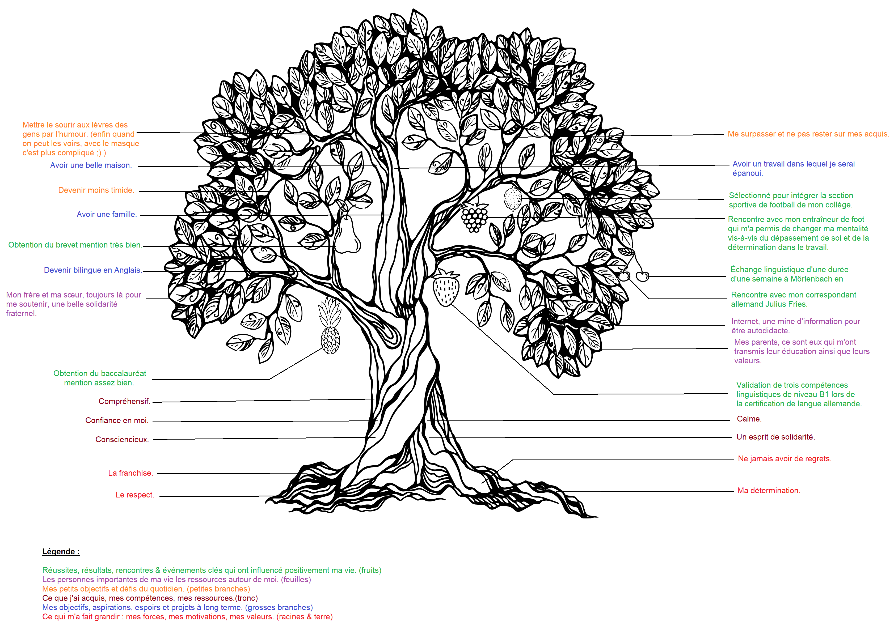

Mon autobiographie
Qui je suis?
Je m’appelle Elian Guilleminot, j’ai 18 ans et je suis né le 10 mars 2003 à Vénissieux dans le département du Rhône.
Je suis un passionné de sciences et de nouvelles technologies. Je suis quelqu’un de perfectionniste et méticuleux, vous pouvez découvrir plus en profondeur les différents traits de ma personnalité dans ce petit résumé.
Et si vous voulez avoir une analyse plus approfondie c’est ici.
Mon parcours scolaire
Je suis titulaire d’un bac général spécialité maths/physique option maths expertes, langue vivante 1 anglais et langue vivante 2 allemand. Ma scolarité s’est déroulée essentiellement dans mon village à Saint-Symphorien-d’Ozon de ma primaire à mon collège. Arrivé au lycée j’ai pu intégrer le lycée La Martinière Monplaisir dans Lyon 8eme. Actuellement je suis en première année de BUT réseaux et télécommunications parcours cybersécurité à l'IUT de Valence.
Mon blason
Voici mon blason représentant mes valeurs.
Mon arbre de vie
Voici mon arbre de vie représentant les faits marquants de ma vie.
Compléments
Mes meilleures expériences dans ma scolarité :
J’ai eu la chance de pouvoir effectuer un échange franco-allemand pendant mon année de 4ème. Je suis donc parti 1 semaine dans la commune de Rimbach en Hesse, située dans l'arrondissement de la Bergstraße, dans le district de Darmstadt. Lors de cet échange j’ai pu visiter un «Weihnachtsmarkt » (marché de noël) et goûter à de nombreuses traditions allemandes telles que des « Currywurst » ce sont des saucisses grillées ou cuites à l'eau, entières ou en rondelles, accompagnées d'une sauce tomate et de curry en poudre ou d'un ketchup au curry ou encore un « Kinderpunsch » (vin chaud sans alcool).
Une autre expérience marquante de mes années collèges est le stage de 3ème que j’ai pu effectuer dans une ESN (Entreprise de Services du Numérique) nommée Linkbynet spécialisée dans l’infogérance cette expérience dans le monde professionnel a été fondatrice dans ma volonté de continuer mes études dans une filière en lien avec l’informatique.